An expander is an expandable UI component that reveals and hides the content contained within as the result of a click action.
Expanders give the user a sense of what content they contain without necessarily forcing the user to actually view all of the expander’s content. Because they conserve vertical space, expanders can be especially good for mobile.
Expanders generally work best when they ask the user to focus on a single task or a very small number of closely related tasks. That’s why it’s not a good practice to nest a table, tabs, or another expander inside of an expander.
We define four types of expanders—standard, lightweight, pop-out, and peek-a-boo—which we define in more detail below. In order to better understand their similarities and differences, we use the following terminology to refer to the parts of an expander:
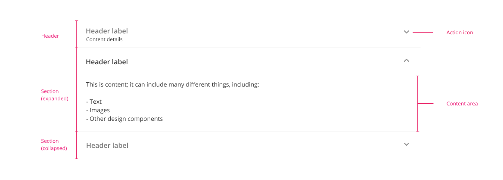
Expander: an expandable UI element composed of multiple sections.
Section: an element, consisting of a header and a content area, that makes up an expander. All expanders (except for peek-a-boos) consist of at least two sections.
Header: the element that contains a label and additional elements—an icon, an action, and/or content details—that give the user the information they need to determine how and whether to expand a section.
Action icon: an icon appearing in the header that indicates the section can be expanded and collapsed.
Content details: Read-only information visible in the header even when the section is collapsed.
Content area: the area that appears when a header is expanded.
Label: the name of an expander section.
Content: information inside of the content area.
Each of the four types of expanders has some distinct features, which means that some expanders are a better fit for some situations than others.
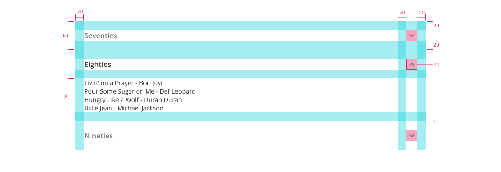
All values are in pixels. X represents the height of the content area, which will vary based upon the height of the content inside of the section.
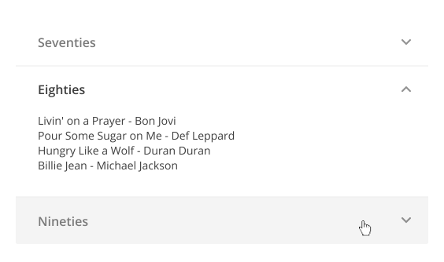
Standard expanders on a gray background
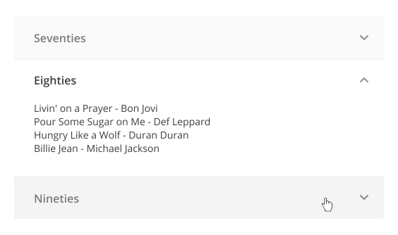
Standard expanders on a white background
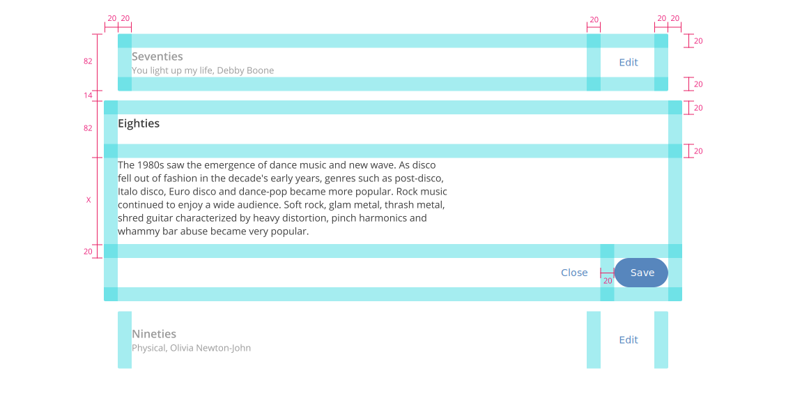
All values are in pixels. X represents the height of the content area, which will vary based upon the height of the content inside of the section.
Because of limited space, the mobile pop-out expander doesn’t get any wider when expanded.
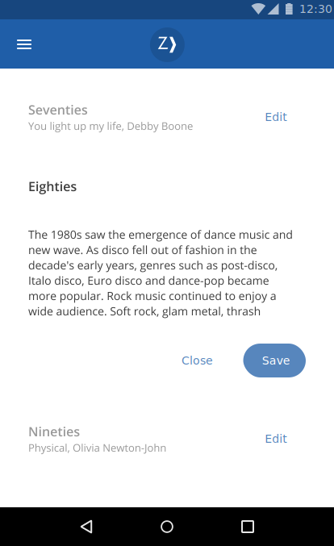
Popout expanders on a gray background
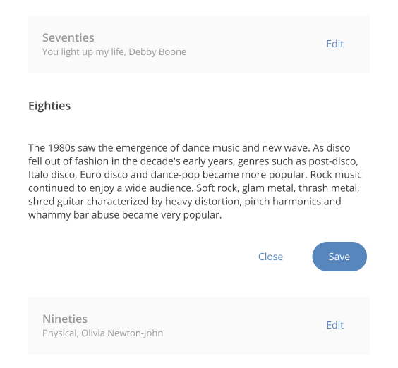
Popout expanders on a white background
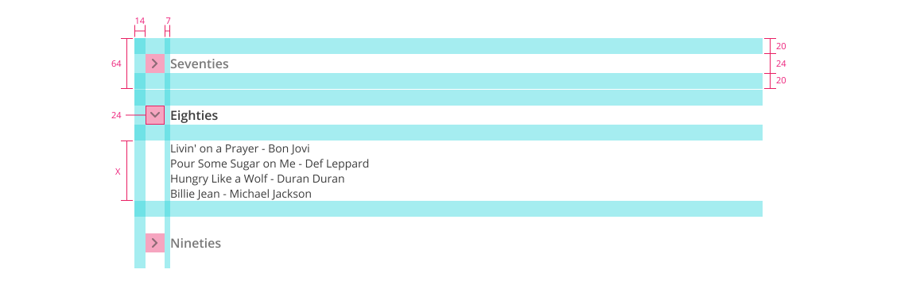
All values are in pixels. X represents the height of the content area, which will vary based upon the height of the content inside of the section.
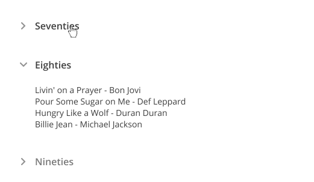
Lightweight expanders on a white background
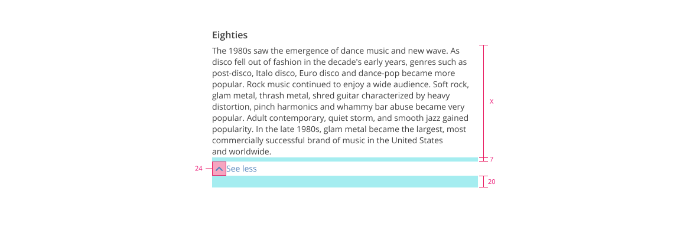
All values are in pixels. X represents the height of the content area, which will vary based upon the height of the content inside of the section.
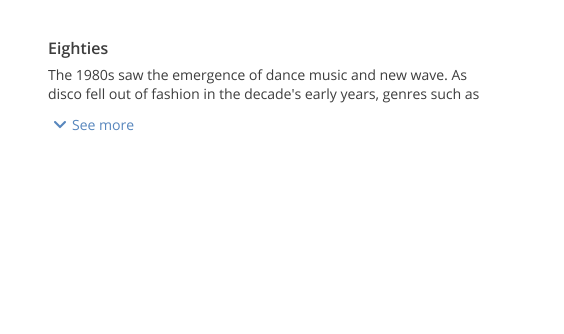
Peek-a-boo: collapsed state
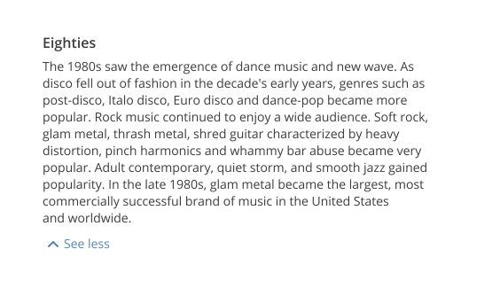
Peek-a-boo: expanded state
The best practices for icon placement for each type of expander are outlined above. Sometimes, though, other design considerations (e.g., content details in a standard expander) might justify placing the icon elsewhere, if the designer believes doing so will make things clearer for the user.
Usually, content details will appear in a pop-out expander. However, they may also be used in a standard expander.